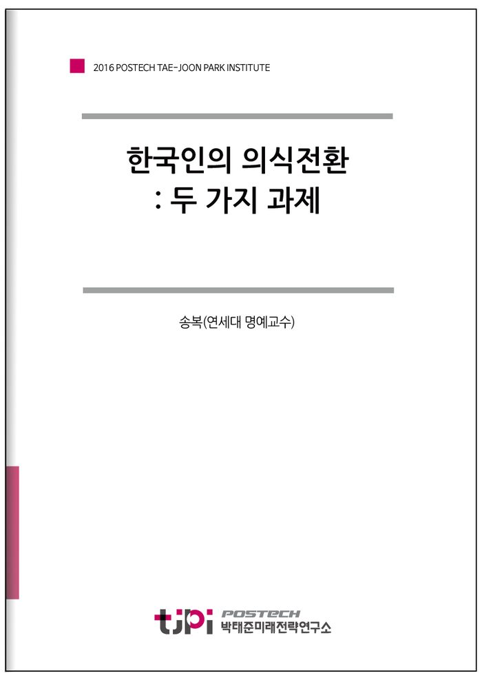

저자 송복(연세대 명예교수)보도일 2017.02.01

요 약
‘더 나은 사회’를 위해서는 대대적인 의식 전환이 있어야 한다고 강조한다. 그에 대한 실천 지침으로 일반 국민에겐 '문치(文治) 의식’, 한국사회 고위층에겐 '희생의식'을 강조한다. 저자는 문치를 실현하는 방법에 있어 획기적인 국회의원 충원 방식을 제안하고 있다. 송 교수가 말하는 이상적 정치인 구성 비율은 군인 경력 30%, 공대 출신 30%, 인문사회계 30%, 기타 10%. 이렇게 해야 다양한 목소리, 각계 여론이 형성되고 우리 정치가 비판에서 건설로, 부정에서 긍정으로, 파당에서 정당정치로 나갈 수 있다는 것이다.
목 차
한국인의 의식전환:
두 가지 과제
1. 문치(文治)의식
2. 희생(犧牲)의식
1) 고위직층의 노블레스 오블리주
2) 문화인 윤리인
3) 특혜 받는 사람들
4) 특혜와 존경
5) 특혜와 희생
(1) 반(半)만의 진리
(2) 불운의 희생자
(3) 금수행위
내 용
[2016 연구논문]한국인의 의식전환: 두 가지 과제
송복(연세대 명예교수)
한국인의 의식전환: 두 가지 과제
노벨 경제학상을 받은 미국 존스 홉킨스 대학의 사이몬 쿠스네츠(Simon Kuznets) 교수가 오래 전에 한 유명한 말이 있다. “어느 나라든 중진국에서 선진국에 이르는 데는 많은 함정들이 있다. 그 중에서도 가장 넘기 어려운 함정은 선진국 바로 문턱에 도사리고 있는 ‘국민의식 전환’이라는 함정이다. 이 함정은 후진국이나 중진국 때의 그 의식으로는 절대로 넘지 못한다. 대다수 나라들은 이 함정에 빠져 선진국 바로 문 앞에서 주저앉고 말았다.” ‘더 나은 사회’로 가는 데 국민의식의 바뀜이 얼마나 중요한가를 한마디로 일러준 말이다. 어느 나라나 선진국이 될 수 있지만, 어느 나라도 쉽게 선진국이 되지 못한 결정적 이유가 이 국민의식의 전환이다. 우리도 이미 오래 전부터 이 국민의식의 전환 혹은 국민의식 개조를 부르짖어 왔다. 그 시작은 일제에 합병되기 전부터였고, 그 이후에도 계속되어 1920년대 초에는 춘원 이광수(春園 李光洙)의 「민족경질론」까지 나왔다. 이 의식전환은 해방과 6·25 후 40년대 말과 50년에도 줄기차게 부르짖었고, 60년대 초에도 그치지 않다가 드디어 새마을운동이 전개되었다. 그러고 보면 우리의 국민의식 바꾸기 운동이며 시도는 근 100년에 이른다.그럼에도 국민의식의 전환은 여전히 우리에게 가장 중요한 문제로 대두되고 있다. 궁극적으로 이 문제는 어느 시대 어느 사회에서나 부상(浮上)되는 과제이기도 하지만, 자유민주주의의 사회에서는 모두 개인의 자율에 맡긴다. 보다 나은 사회를 위한 내 의식의 전환을 타자의 지시나 요구를 바라지 않는 바로 나의 문제다. 전체주의 국가에서처럼 전 국민이 나서서 총체적으로 운동을 벌이는 그런 집단적이며 집합적인
문제가 아니라, 내 의식의 주체는 나이고, 그 결과에 대해 책임지는 당사자도 다른 사람 아닌 바로 나다. 의식의 문제는 오늘날 이렇게 개인 자율의 문제로 대다수 자유민주주의 국가에서는 귀결되고 있다.이는 지금 우리의 경우도 다르지 않다. “너의 의식을 바꾸라. 그렇지 않으면 선진국 문턱에서 우리 모두 좌절하고 만다.” 누구든 이렇게 부르짖을 수는 있지만, 다른 사람들 혹은 일반 국민들이 거기에 호응해 실제 행동으로 보이는 것은 별개의 문제다. 이는 지난날 우리의 그 기나긴 경험이 증명한다. 그러나 아무리 그렇다 해도 그 성공 여부에 관계없이 지난 100년과 마찬가지로 ‘새로이, 새로이’, 이 의식 전환의 문제는 계속해서 제기할 필요가 있다. 이유는 그것이 ‘더 나은 사회를 향한’ 우리 의식 우리 사고 우리 마음가짐 그리고 우리 행동의 지침(指針)이며 지표(指標)가 되기 때문이다.어느 사회든 행위지침이 있는 사회는 희망이 있다. 앞을 가리키는 바늘이 있어, 언제나 그 바늘 따라 전진할 수 있기 때문이다. 행위지표가 뚜렷한 사회는 반드시 도달하고자 하는 목표가 있다. 그리고 반드시 이룩해내려는 목적이 있다. 그 목표 그 목적이 확고한 사회만이 새로운 사회로 발전해가는 동력(動力)을 갖는다. 그래서 지난 일백 년 동안 의식전환 의식개혁의 노력이 기대만큼 결과를 내지 못했다 해도, 그 노력을 단념하거나 포기할 이유는 없다. 그래서 이러한 글들을 쓰고 또 쓰는 것이다.이 글에서는 ‘더 나은 사회’를 위한 우리 의식의 전환을 두 가지로 압축해 제기해보려 한다. 하나는 일반 국민들의 ‘문치(文治)의식’에 대한 재고(再考)이고, 다른 하나는 일반 국민이 아닌 한국사회 고위직층(특혜 받는 층)의 ‘희생(犧牲)의식’에 대한 제고(提高)다. 전자의 ‘재고’는 다시 생각하고 또 생각해서 지금까지 생각해온 바와는 전혀 다르게 생각해야 한다는 것이고, 후자의 ‘제고’는 그 마음가짐 그 행위양태를 지금까지 견지해온 것과는 전혀 다른 새로운 차원에서 새로이 다짐하고 새로이 높여가야 한다는 것이다. (그러나 이 글에서는 앞의 것보다 뒤의 것에 초점해서 더 깊게 더 상세히 논의하려 한다.)
1. 문치(文治)의식1993년 김영삼(金泳三)정부가 들어서면서 이름을 ‘문민정부(文民政府)’로 명명(命名)했다. 그 이름을 듣는 순간 미상불 ‘당쟁(당黨爭)’을 직감하는 사람들이 적지 않았을 것이다. 조선시대의 그 저열(低劣) 하고 치졸(稚拙)했던 권력쟁투의 당쟁시대로 또다시 들어간다는 예감은 ‘하필이면 왜 문민인가’에서 비롯됐을 것이다. 사실 그로부터 4반세기가 지나는 지금까지 우리 정치는 조선시대의 그것과 한 치의 차이도 없는 ‘당파싸움’으로 일관해 왔다. 도대체 문민정부의 그 ‘문민’과 조선시대의 그 당파싸움은 어떤 인과관계가 있는가. 어떤 관계가 있어 지난 세기 60년대에서 80년대까지의 정치와는 전혀 다른 정치행태가 90년대 이후 그렇게 야기되어 왔는가.그 인과관계를 풀이하기 전에, 먼저 지난 25년간의 정치권 내 정치싸움을 상기할 필요가 있다. 역사에서 조선시대의 당파싸움을 제대로 배우지 못했거나 배웠다 해도 제대로 인식이 되지 못하는 사람들은 정치는 으레 저렇게 ‘피나게 싸움하는 것’이라고 생각할지도 모른다. 왜냐하면 그 기간 동안 국회에서 오로지 벌어지는 정치라곤 동물국회 아니면 난장판국회 같은 쟁투의 연장일 뿐이고, 그나마 쟁투가 없으면 아무 일도 안하는 식물국회로 돌변해서 놀기만 하는 국회만 보아왔기 때문이다.그러나 학교에서 혹은 교과서에서 현대 자유민주주의 국가의 정치를 배워온 사람들은 현대정치는 조선시대의 그 당쟁의 정치가 아니라 정당정치라는 것을 잘 안다. 정당정치는 정당 간 타협의 정치이고, 협상의 정치이고, 국가자원을 적절히 배분하는 생산의 정치이고, 때로는 권력도 다른 정당과 배분해 갖는 협치의 정치다. 그래서 정치의 주역이고 주체는 어디까지나 정당이다. 그 정당의 최고기능은 가장 좋은 정책을 창안해서 정당간 경쟁을 벌리는 것이고, 그 경쟁을 통해 마침내 국민으로부터 권력을 위임받는 수권정당이 된다.그렇다면 지금 우리 정당도 그러한가. 지금 우리 정당도 학교에서 배운 그런 정당인가. 미국이나 영국 프랑스나 독일에서 보는 정당과 같은 정당인가. 지금 우리 정당은 정당이 아니라 파당(派黨)이다. 파당은 조선시대 당파(黨派)의 현대 말이다. 물론 그때도 파당이라는 말을 썼지만 당파가 주였다.
그래서 당파라 하면 사람들이 모두 조선시대의 그것을 떠올리니까 지금은 파당이라고 한다. 파당의 순수 우리말은 ‘패거리’다. 패거리는 ‘나쁜 일을 하고 다니는 한 떼의 사람들’이라는 아주 부정적 의미를 갖는다.어쨌든 지금 우리 정치는 앞서 교과서에서 말하는 그런 정당정치가 아니고 파당정치(派黨政治)이고, 더 원색적으로는 패거리 정치다. 파당정치, 패거리 정치의 국어사전적 의미는 ‘거리의 패거리처럼 오직 자기 집단 자기 패거리의 이익만 올리는 데 온갖 노력을 쏟아붇는 정치’이다. 지난 4반세기 이래 우리 정치가 그러하지 않았는가. 조선시대의 그 당쟁과 지금 우리 정당들 간의 싸움이 무엇이 다른가. 조선시대의 그것과 조금도 다름이 없다면 지금 우리의 정당정치는 정당정치가 아니라 바로 파당정치(派黨政治)다. 우리 정당 안을 들여다보면 그 정치행태는 완전히 패거리 정치행태다.패거리 정치행태, 좀 순화된 용어로 파당정치 행태라 한다면, 지금 우리의 이 파당정치 행태는 조선시대의 그것처럼 국민이 없다. 말로는 조선시대에도 늘 백성을 내세웠고, 지금도 국민을 언제나 내세운다. 하지만 그때나 지금이나 백성도 국민도 실제로는 없다. 수사적(修辭的)으로만 있을 뿐이다. 오로지 찾는 것은, 그리고 도모하는 것은 그때의 당파이익이며, 지금의 파당이익(派黨利益)이다. 그때의 당파나 지금의 파당이나 그들에게는 가치의식이 없다. 오로지 이익의식만 있을 뿐이다. 조선시대에도 말로는 “공자왈 맹자왈” 하는 가치가 있었다. 지금도 자유며 평등이며 인권이며 복지라는 가치를 말한다. 그러나 그들의 내면 그들의 행태는 그 가치와 아무런 연관이 없다.이런 파당정치와 그런 정당정치의 파당간 정당간 상호관계 면에서 가장 큰 차이는 무엇인가. 먼저 정당정치의 원산지인 서구 정당을 말하면, 그들 정당정치의 생명은 ‘경쟁(競爭)은 하되 대결(對決)은 하지 않는다’이다. 그들 말로 competition but not confrontation이다. 그러나 파당정치는 정반대가 된다. 거꾸로 ‘대결만 있고 경쟁은 없다’이다.
그 차이는 무엇인가. 경쟁competition은 서로의 장점을 겨루는 것이다. 단점을 내세워서는 경쟁에 이길 수 없다. 그래서 있는 힘을 다해 장점을 키우고, 그 장점으로 상대방 장점과 서로 경쟁하는 것이다. 그런 장점 겨루기 경쟁은 하면 할수록 상대방도 나도 장점이 더 많아지고 더 커지고 발전하는 시너지 효과를 갖는다.그러나 대결confrontation은 정반대다. 대결은 상대방의 약점을 찾아 상대방을 무너뜨리고 그리고 망하게 하는 것이다. 급기야는 죽이고 죽도록 만드는 것이다. 그렇게 상대방을 몰락시키는 데는 좋은 정책을 내놓기보다는 진영(陣營)을 만들고 구축하는 것이 더 효과적이다. 공명정대한 경쟁보다는 계략 음모 공작 등 정치공학이 더 유효한 것이다.어떻게 하든 상대 정당의 파탄을 꾀하고, 어떤 수를 쓰든 상대정권의 실패를 도모한다. 그것이 바로 내 파당의 기회이고 다음 차례 정권획득 권력장악의 최고 방책이라 생각한다. 그것이 정당정치 아닌 파당장치의 실상이고, 파당정치의 원형이다. 바로 지난 4반세기의 우리 정치의 실상 그대로다.정당정치 아닌 이 파당정치가 문민정부의 ‘문민(文民)’과 어떤 인과관계가 있는가. 어째서 문민정부 이후 우리 정치는 정당정치 아닌 파당정치가 되었는가. 더 원색적으로는 패거리정치로 바뀌었는가. 문민정부의 문민은 ‘직업군인 경력을 갖지 않은 사람’을 말한다. 영어로는 civilian이고 문민정부는 civilian government라 하지만, 실상 이 말은 우리말이 아니고 일본말 문민(文民)에서 따온 말이다. 그래서 1970년대 80년대는 물론 90년대까지도 우리말 사전에는 수록되지 않은 말이다. 아마도 처음 이 말을 일본말에서 따와 ‘문민정부’라 명명한 사람은 조선시대의 문치(文治)를 생각해서일 것이다. 조선이야말로 전형적인 문치의 나라다. 문치는 글자 그대로 무인(武人)이 아닌 문인(文人, 당시는 문신(文臣))들이 독점적으로 나라를 다스리고 정치를 하는 것이다. 심지어는 군사령관까지도 무인이 아니고 문인(문신)들이 했으니 조선시대야말로 완전히 문인이 다스리는 문치의 나라다.
문제는 문인이 독점적으로 정치를 할 때 그 정치는 어떤 정치가 되느냐이다. 그 정치의 실상은 파당정치─영락없는 조선시대의 당쟁으로 전화(轉化)하고, 그런 전화는 우리 역사에서 한 번도 예외가 없어, 지난 세기 90년도 이래, 심지어 21세기에 와서도 그 당쟁의 파당정치는 꼭 그대로 재현되어 끝없이 반복되고 있다. 경쟁의 정치가 아니라 대결의 정치, 정책 생산 정치가 아니라 진영 굳히기 정치, 공익 타협의 정치가 아니라 사익 야합의 정치, 배려 배분의 정치가 아니라 이기(利己) 독점의 정치, 마침내 공존 공생의 정치가 아니라 공멸 공사(共死)까지 하는 정치가 되고 있다. 대통령도 문민정부 이래 성공한 대통령이 없고 국회도 대(代)를 거듭할수록 퇴화하고 있다. 왜 그러한가. 문치의 정치, 그리고 문치와 정치, 그 두 요체(要諦) 사이에 도대체 어떤 상관관계가 있는가. 그 둘 사이에 어떤 상반성(相反性) 어떤 함정이 가로 놓여 있는가. 이는 문치, 즉 문인의 그 문(文)의 본질 그 문(文)의 특성에 초점해 보아야 한다. 그리고 그것이 현실의 정치와 어떻게 다른가. 어떤 친화성(親和性) 혹은 어떤 상반성을 가지고 있는가에 주목해야 한다. 결론적으로 친화성보다 상반성이 훨씬 클 것이라는 것은 문치 혹은 문민정치가 파당정치로 일관한 데서 잘 알 수 있다. 설혹 그렇다 해도 그 어떤 친화성이 있어 우리 정치가 그 오랜 세월 문치 일방통행이었고 문치의 그 몰정치력(沒政治力)에도 여전히 무치(武治)─군사정부에 대한 부정 거부감이 상존한다는 것을 주시해야 한다.첫째로 문(文)은 기본적으로 관념(觀念)이고 관념론이다. 관념은 그 ‘무엇’을 생각하는 것이고, 그 무엇은 궁극적으로 본질이고 원리며 원칙이다. 그래서 문인들은 언제나 그 ‘어떻게how’보다 그 ‘무엇what’을 먼저 생각하고, 끝내는 그 ‘어떻게’는 경시하거나 무시해 버린다. 그래서 문인들은 그 ‘무엇’을 가지고 자기주장을 펼치고 그리고 그 ‘무엇’을 가지고 싸운다. 그러나 그 ‘무엇’은 실체가 없다. 본질이 눈에 보이지 않듯이 머릿속으로 마음속으로만 있다. 마음속 머릿속에 있는 그 ‘무엇’은 사람마다 다르고, 다른 것만큼 합의를 도출해낼 수 없다.
그럼에도 내가 생각하는 그 ‘무엇’은 원리며 원칙으로 반드시 옳은 것이고, 그 옳기만 한 원리 원칙에 동의하지 않거나 반대하는 사람은 나의 적이 된다. 그래서 문인들의 그 문(文) 혹은 문치의 그 문(文)은 ‘마땅히 그러하고’ 그래서 또 ‘그러해야 한다’는 당위론(當爲論)이 된다.그러나 현실의 정치는 관념이 아니라 ‘실제(實際)’이고 그 논의는 언제나 실제론이다. 현실의 문제를 다루는 것만큼 ‘실제 어떻게 되어 있느냐’가 중요하다. 현실의 문제는 사실상 타결해야 할 딜레마들이다.따라서 그 문제 그 딜레마를 실제 어떻게 해결해갈 것이냐의 그 ‘어떻게how’가 그 ‘무엇what’에 우선한다. 실제 정치에서 그 무엇what은 대개는 현실에 당면하는 문제들이며 봉착한 난관들이다. 그래서 그 문제 그 난관은 문(文)의 ‘그 무엇’과 달리 구구각색이 아니라 사람들마다 거의 일치해 있다. 그렇다면 문치 문인의 그 문(文)의 관념과 정치 정(政)의 실제는 상반되어 있고, 그것은 문치 문민의 문(文)이 그대로 고수되는 한 정치는 깨어지거나 몰정치(沒政治)의 파당정치로 전화한다는 의미가 된다.둘째로 문치는 생리적으로 비판, 비판적이다. 시작부터 천부적으로 비판이 내재한다. 비판은 옳고 그름 좋고 나쁨에 대한 헤아림이다. 하지만, 문(文)에서의 비판은 옳은 것보다는 그른 것, 좋은 것보다는 나쁜 것에 초점해서 그 이유를 캐고 시시비비를 가린다. 잘못된 것을 바로잡고 더 나은 것으로 지향하는 순기능도 하지만, 그래서 비판은 지지보다는 언제나 공격적이다. 공격적인 것만큼 친화성이 결여되어 있고 타자의 긴장을 야기한다. 쓰는 언어도 격렬하고 날카로워서 읽는 이의 분노를 자아내고 어김없이 쟁투를 유발한다.그러나 정치는 비판이 아니고 건설(建設)이다. 기존의 것을 확장도 하지만, 대개는 문(文)의 비판행태와 달리 없는 것을 만들어가는 작업이다. 정치에서의 자원의 배분도 인프라 등 새것 건설이 중심이다. 그러나 건설은 어떤 형태로든 시시비비가 있게 되어 있다.
문(文)의 정치는 이 건설 중 잘못된 것을 가려내서 비판하는 것이고, 그 비판은 스스로의 논리를 좇아 격렬하고 과격해서 아무리 좋은 건설도 정치 현장에서는 쟁투의 장으로 바뀐다. 이처럼 문(文)은 생리적으로 정쟁을 내포하고 있어 문(文)의 정치는 끝내 파당정치 쟁투의 정치로 바뀌고 만다.셋째로 문(文)은 사회적으로 부정·부정성(否定性)이다. 문(文)은 긍정(肯定)하지 않는다. 나 밖의 다른 문인(文人)을 인정하지 않고, 다른 문인이 내 놓은 작품이 아무리 걸작이라도 수긍하지 않고, 물론 여타의 다른 어떤 업적도 업적으로 받아들이지 않는다. 그것이 부정성으로서의 문(文)의 사회성이다. 이런 문(文)의 부정성은 일찍이 후한(後漢) 말기 칠대가(七大家)의 한 사람인 위(魏)문제 조비(曹丕)의 글에서도 잘 나타나 있다. 문인상경(文人相)輕) 자고이연(自古已然). ‘글 쓰는 문인들은 서로가 서로를 인정하지 않는다. 그것은 옛날부터 지금까지 변함이 없다.’ 이미 2천년 전부터 그러해 왔다면, 문(文)의 사회성으로서의 부정성은 바꿀 수 없다. 그렇다면 문치(文治)는 오로지 타자 부정성으로서의 정치다.그러나 정치는 긍정성이다. 서로를 긍정하는 데서 서로에 대한 지지가 나오고, 서로를 지지하는 데서 생산하는 정치가 된다. 당이 다르고 정권이 달라도 그 다름이 부정으로 이어지는 정치는 정치가 아니다. 다른 정당 다른 정권 그리고 그 정당 그 정권의 사람들이며 그들이 이룩한 업적에 대한 부정은 정치의 소멸이며 몰정치며 정치의 파탄이다. 오직 긍정을 본(本)으로 하는 정치, 그 정치만이 정치 본연의 타협과 협상 협치를 이루어낸다. 그렇다면 문치에서의 그 문(文)의 부정성으로서의 정치는 얼마나 정치 본연의 그 정치와 상반되는 것인가. 경쟁의 정치와 대결의 정치만큼 상반되지 않는가.지금의 우리 정치를 정치 본연의 정치, 서구에서 보는 정치로 바로 잡으려면 지금까지 우리가 고수해온 ‘문치(文治) 의식’을 바꾸어야 한다. 그 문치의식을 계속 지니고 있는 한 우리 정치는 파당정치를 벗어날 수 없다. 정치파탄 몰정치를 면할 길이 없다. 조선조 5백년 그리고 지난 4반세기의 그 공멸공사(共滅共死)의 정치를 자손 대대로 이어가게 할 수밖에 없다.
그래서 ‘문민정부’식 문치를 바꾸는 의식과 함께 정치제도를 모색해야 한다. 그 의식의 바꿈, 그 정치제도의 창안은 사람을 바꾸는 데서 시작해야 한다. 그 사람의 바꿈은 곧 정치인의 새로운 충원(充員)이다.그 정치인의 충원은 ‘문치’에서 보듯, 문인위주로 이루어져서는 안 된다. 가능한 정치인으로서의 문인 수는 줄여야 한다. 그렇다면 어떻게 할 것인가. ‘3.3.3.1’ 충원 방식을 택해야 한다. 이 방식은 국회의원 후보를 각 정당에서 공천할 때, 군인경력 소지자(주로 사관학교 졸업자) 3 , 공과대학(이과 포함) 졸업자 3, 그리고 인분사회계 졸업자 3, 기타 1로 하는 것이다. 물론 이는 ‘문치의식’에서 벗어나야만 가능하다. 이때 비로소 우리 정치는 관념에서 실제, 비판에서 건설, 부정에서 긍정으로 바꿔질 수 있으며, 대결의 정치에서 경쟁의 정치, 파당의 정치에서 정당의 정치로 바뀌어질 수 있다.
2. 희생(犧牲)의식1) 고위직층의 노블레스 오블리주지금 우리에게 가장 중요한 것은 ‘역사의 동력’이다. 이 ‘역사의 동력’을 어디서 찾을 것인가. ‘역사의 동력’은 발전의 엔진이다. 엔진이 있어 배가 가고 자동차가 달리고 비행기가 난다. 그 동력이 있어 국가는 재조(再造)되고 국민은 활력에 찬다. 그 활력이 넘쳐서 온 국민이 글로벌로 뛰고, 온 세계를 한나라인 양 누비고 또 누빈다. 역사의 창(窓)은 오직 그 동력으로만 열린다. 앞선 시대와 다른 새 시대도 새로운 동력 없이는 이행(移行)이 불가능하고, 그 시대의 시대정신도 그 내용이며 내실은 모두 이 새 동력으로 창출된다.그 동력을 지난 세기 60년대 이래의 첫 30년은 ‘적나라한 물리력’에 기초한 ‘강력한 리더십’에서 찾았다. 그 리더십이 ‘역사의 동력’이 되어 유례에 없는 산업화를 성취했다. 지난 세기 90년대 이래의 민주화시대 첫 30년, 지금 우리가 살고 있는 이 시대의 ‘역사의 동력’은 무엇인가.
국민들은 아직도 산업화시대 성공모델의 관성(慣性)에 젖어, 대통령 1인의 빼어난 능력이나 형안(炯眼) 정치력 등의 리더십에 기대고 있다.그러나 그 시대는 다시 오지 않는다. ‘역사는 반복한다’ 하지만 재현(再現)되지는 않는다. 헌법을 바꾸고 정부 정치인 국회의원들이 개심(改心)하고 작심(作心)을 해서 협치(協治)를 해도, 지난날의 그같은 ‘역사의 동력’은 만들어지지 않는다. 시대가 달라졌다. 이 시대는 정치제도를 달리하고 그 정치제도에 맞는 정치인을 뽑는다 해서 역사가 달라지는 시대가 아니다. 그런 정치 고전주의(古典主義) 시대는 이미 지나갔다. ‘좋은’ 헌법 ‘좋은’ 제도 ‘좋은’ 정치인과 ‘좋은’ 국가를 등식화하던 정치낭만주의는 이 시대의 것도, 다음 시대의 것도 아니다. 그런 기대는 일찌감치 접는 것이 좋다. 허망한 기대는 언제나 허망하다.이제 우리가 찾아야 할, 그리고 기필코 만들어내야 할 새 ‘역사의 동력’은 바로 노블레스 오블리주(noblesse oblige)다. 노블레스 오블리주가 지금 우리 시대, 다른 나라 아닌 바로 이 나라의 ‘역사의 동력’이다. 이 동력은 우리보다 앞서 민주화한 선진민주주의의 국가들의 경험이 가르쳐주고 있는 것이다. 무엇이 그들로 하여금 200년 이상 선진의 지위를 변함없이 유지하게 했는가. 그 ‘역사의 동력’은 무엇이며 어디서 나왔는가. 그 어떤 동력으로 그들 ‘민주화’와 우리 ‘민주화’는 다른가. 산업화에선 그들이나 우리나 지금 차이가 없지 않은가. 산업화에서 따라잡았다면 민주화에선 왜 따라잡지 못하겠는가.그 이유는 단 하나, 노블레스 노블리주의 있고 없음이다. 그들은 그것이 있는데 우리는 없다. 그들도 우리도 다같이 저성장 양극화에 신음하고 있다. 그들 국민도 우리 국민도 심한 갈등에 날카로워 있고, 들끓는 분노로 다같이 가슴을 앓고 있다. 그럼에도 그들은 ‘계속’ 존경심을 유발하는 사람들이 있고, ‘계속’ 도덕심을 높여주는 집단이 있다. 그리고 사고와 행동 일상생활에서 지표(指標)가 되는, 그래서 모든 사람들에게 ‘계속’ 수범(垂範)을 보이는 계층이 있다.
그들이 있어 그들 나라는 ‘계속’ 선진국이고, 선진국으로서의 지위를 그 오랜 세월 ‘계속’ 지켜나가게 하는 힘이 나온다. 그들의 존경심 그들의 도덕심 그리고 그들의 수범성이 그들의 노블레스 오블리주에서 나오고, 바로 그것이 역사를 이끌어가는 동력이 된다. 그 동력이 지금 우리에게는 없다.노블레스 오블리주는 한마디로 ‘특혜’ 받는 사람들의 책임이다. 옥스퍼드사전에는 노블레스 오블리주를 “특혜는 책임을 수반한다, privilege entails responsibility”는 말로 정의하고 있다. 특혜와 책임은 동전의 안팎이다. 동전은 반드시 그 안팎, 양면이 있어 동전이다. 한쪽이 없으면 다른 한쪽도 없어진다. 책임 없는 특혜는 없다. 특혜를 받았으면 책임을 져야 한다. 긴 눈으로 보나 짧은 눈으로 보나, ‘특혜만 챙기는’ 특혜 받는 사람, 그들의 수명은 너무 짧다. 그들이 끝나는 자리는 질타와 분노와 치욕만이 기다리고 있다.특혜 받는 사람들의 책임은 세 가지로 나타난다. 이 세 가지는‘희생(犧牲)’이라는 말 하나로 축약되고, 그 희생이 바로 노블레스 오블리주다.첫째로 목숨을 바치는 희생이다. 전쟁이 일어났을 때 혹은 심각한 안보위기에 처했을 때 누구보다 앞장서 ‘내 목숨’을 내놓는 것이다. 총알받이처럼 선두에 서서 싸우다 특혜 받는 내가 먼저 죽어 주어야 한다. 그것이 지금까지 내가 누려온 특혜의 대가다. 공자(孔子)도 꼭 같은 말을 했다. 논어(論語)에서 말하는 견위수명(見危授命)이 그것이다.둘째로 기득권(旣得權)을 내려놓는 희생이다. 전쟁은 아니라 해도 위기라 할 만큼 나라가 어려움에 처할 때 ‘내가 가진 기득권을 내려놓는 것’이다. 기득권은 특혜를 먼저 ‘선점(先占)’해서 오래 ‘차지하고’ 있는 것이다. 누구나 앞서 차지하면 내놓으려 하지 않는다. 전철칸의 자리도 내가 먼저 앉으면 장애자가 와도 일어서지 않는다. 하물며 높은 자리며 소득이며 권력이랴. 논어에서는 기득권을 내놓으라 하면 “그 기득권을 지키기 위해 못하는 행동이 없다.”(無所不至) 했다.
그럼에도 그 기득권을 미련 없이 내려놓는 것이 노브레스 오블리주다. 특혜 받은 자, 받는 자의 직심(直心)이다.셋째로 배려와 양보, 헌신의 희생이다. 이는 평상시 일상 생활과정에서 남을 먼저 배려하고 양보하고, 내 이해를 떠나 진심전력으로 남을 돕고 남을 위해 일하는 것이다. 지위의 높고 낮음을 떠나 남 앞에 언제나 겸손하고 소위 말하는 ‘갑(甲)질’이라는 것을 하지 않는 것이다. 일반 국민 모두가 그렇게 하라는 것이 아니라, 특혜 받은 사람 특혜 받고 있는 사람은 반드시 그렇게 해야 한다는 것이다. 그것이 그들의 노블레스 오블리주다.‘갑질’이라는 말은 유독 지금 우리 사회에서만 볼 수 있는 특이한 야만적 행태다. 특히 우리 고위직 층의 위세 위압적 태도를 태양 아래 고스란히 있는 그대로 드러내주는 말이다. 자기수양 자기관리가 전혀 안 돼 있음은 물론, 거기에 가정교육과 학교교육까지 제대로 받지 못했음을 입증하는 천민행위다. 선진 민주주의의 국가의 고위직 층에서는 그 짝을 찾아볼수 없는 사례다.우리 고위직층은 나라로부터 국민으로부터 ‘특혜’ 받고 있다는 ‘특혜의식’이 없다. 내가 잘나서, 내가 능력과 경쟁력이 있어서 지금 이 자리에 올라와 있고, 그리고 지금 받고 있는 것은 국가 국민으로부터 받는 ‘특혜’가 아니라, 내 피와 땀과 눈물의 대가일 뿐이라고 생각한다. 노블레스 오블리주 기준에서 보면 철면피나 다름없다. 특히 이 말을 쓰는 서구 사람들의 사고에서 보면 금수의 그것과 별 차이가 없다. 그래서 그들의 노블레스 오블리주를 지금 우리가 ‘간절히’ 찾고 ‘간절히’ 소망하는 것이다.노블레스 오블리주는 어느 나라든 그 나라 상층(上層)의 행태다. 상층이 노블레스 오블리주를 가짐으로써 상류사회(High Society)를 형성한다. 그런데 지금 우리는 상층은 있는데 상류사회가 없고, 고위직층은 있는데 노블레스 오블리주가 없다. 그 전형적 예가 고위정치인(국회의원)이며, 고위관료, 고위 법조인이다. 그들이 물러나고 나면 ‘○○피아’가 그들 이름 뒤에 붙는다. 노블레스 오블리주와는 정반대되는 마피아라는 것이다. 기가 막힐 일이다.
그래도 2000년대를 넘어서면서 우리의 기업가층은 고위직층에 비해 역동성(dynamism)도 있고 돌파력(breakthrough) 창발성(creativity), 거기에 현장(field)감각과 방법론(methodology)이 있다. 지금 이 나라가 이만큼이라도 되어있는 것은 그들 기업가층이 있어서다. 그러나 국회의원들은 그들이 누리는 특혜, 그들이 가져야할 노블레스 오블리주는 팽개치고, 오히려 기업인들을 규탄하고 있다. 그래서 2000년 이후 우리 상층의 문제점을 이들 정치고위직층을 비롯한 여타 고위직층에서 찾아, 그들이 지금 갖지 못한 5개를 이 글에서는 5무(無)로 해서 분석했다.정말 우리 상층은 노블레스 오블리주가 없는 천민 상층으로 내내 지속해갈 것인가. ‘역사의 동력’으로서 노블레스 오블리주를 가질 것인가. 여기서는 신라의 상층을 본보기로, 역사적으로 우리에게도 있었던 그 엄연한 노블레스 오블리주를 예시했다. 사실 신라인들의 그것은 지금까지 영국인이나 미국인들이 보여온 그 노블레스 오블리주보다 오히려 더 리얼하고 치열했다. 그같은 우리 민족의 우수성과 영리함 그리고 그 지혜로움으로 해서 언젠가는 우리 고위직층도 깊은 깨달음을 얻을 것이고, 그들의 ‘특혜’ 누림은 ‘희생의식’으로 전환돼 노블레스 오블리주가 반드시 발현될 것임을 예단한다.서구인들도 오랜 역사에서 숱한 위기를 경험하면서 그러한 노블레스 오블리주를 쌓아올리지 않았는가. 우리 역시 지금까지 허다한 난관을 헤쳐 나오며 주저앉지 않고 버티며 일어섰다는 것, 그것이 바로 우리 고위직층의 노블레스 오블리주 도래(到來)를 기대하게 하는 것이 아니겠는가.
2) 문화인 윤리인이제 우리 ‘역사의 동력’은 ‘문화와 윤리’에서 찾아야 한다. 「문화와 윤리」가 만들어내는 「역사의 동력」, 그 단계로 올라서고, 그 단계로 진입해야, 역사를 다르게 만들고 새로이 발전시키는 지속적인 동력을 가질 수 있다. 역사에서 동력은 자동차의 엔진이다. 역사는 참으로 아이러니한 것이어서 무(武)와 문(文)이 서로 바뀌며 동력을 생산해낸다. 그것은 순환과정이기도 하고 변증법적 과정이기도 하다.
어느 것이든 지금 우리는 문(文)의 세계─「문화와 윤리」에서 「역사의 동력」을 찾고 역사를 다시 세워가는 과정에 들어선 것이다.문화와 윤리는 그 사회 특유의 문화·윤리가 내재(內在)한 사람을 만들어낸다. 높으면 높은 대로, 낮으면 낮은 대로 문화는 문화인을, 윤리는 윤리인을 배출해서 사회로 내보낸다. 문화인은 지식과 상식과 교양이 내면화(內面化, internalization)된 사람이고, 윤리인은 사람으로서 마땅히 지키고 행동해야 할 도리 도덕과 규범이 내면화된 사람이다. 내면화는 정신적으로 심리적으로 문화적 윤리적 가치와 지향이 자기 속에 깊이 자리 잡고 있는 것을 말한다. 그 문화 그 윤리가 이미 내 몸 안에서 뼈가 되고 살이 되어서 따로 훈시되거나 교육 받지 않아도 문화인으로 윤리인으로 행동하는 것이다. 그래서 무의식적으로 행동해도 문화를 손상시키거나 저하시키지 않고, 윤리에서 일탈하거나 윤리를 무너뜨리는 행동을 하지 않는 것이다.온 국민이 이러한 문화인 윤리인이 된다면 그 나라의 장래는 더 이를 여지가 없다. 그 자체가 바로 「역사의 동력」이 되어서 새 역사의 장은 지속적으로 펼쳐진다. 우리 사회에서 늘 문제가 되는 갈등의 정도도 떨어지고, 대망하는 사회적 화합과 협동, 통합의 수준도 항시 높은 상태에 이르게 된다. 유엔 자문기구에서 내는 세계 <행복 보고서>에도 늘 상위를 차지할 것이고, OECD(경제협력개발기구)에서 해마다 발표하는 ‘더 나은 삶의 질 지수’에서도 어느 해 가릴 것 없이 1~2위로 오르게 될 것이다.그러나 그것은 이상이다. 어느 나라도 온 국민이 다 문화인이고 윤리인이 되는 나라는 없다. 미상불 인류가 지구에서 사라지도록까지 그것은 불가능할 것이다. 교육 수준이 높고, 경제·문화 수준이 높으면 도덕·윤리 수준도 함께 올라서 온 국민이 하나같이 문화인 윤리인이 될 수 있을 것으로 기대할 수도 있지만, 그래서 요사이 흔히 인용되는, 어느 철인(哲人)이 말했다는 “아닌 것이 아니라 아직 아닌 것”이라는 경구(警句) 유사한 재미있는 수사(修辭)도 떠올리지만, 그것은 한갓 기대며 희망, 하나의 상상일 뿐이다. 왜냐면 문화며 윤리 자체가 워낙 다원 다양한 것이어서 누구나 하나로 동의하는 그러그러한 문화인 윤리인이 될 수도 없지만, 무엇보다 인간 자체가 빠짐없이 다 문화인·윤리인으로 재탄생되어 나타날 수 없기 때문이다.
3) 특혜 받는 사람들그러나 그 온 국민 중에서도 꼭 그렇게 해야 하는 사람들이 있다. 그런 문화인으로 그런 윤리인으로 거듭나지 않으면 안 되는 특정 부류의 사람들이 있다. 그 사람은 바로 그 사회에서 「특혜」(特惠 privilege) 받는 사람들이다. 어느 사회 없이 사회에는 꼭 「특혜」 받는 사람들이 있다. 그 특혜는 시대를 초월해 있다. 똑같은 권리와 의무를 지닌 국민인데, 똑같은 사랑과 애정을 쏟는 동족이며 혈육인데, 그럼에도 거기에는 차별적으로 대우받는 사람들이 있다. 차별적으로 지위가 높고 차등적으로 돈도 많이 받고 거기에 권력까지 센 사람들이 존재한다. 옥상옥(屋上屋)으로 명예까지 누린다. ‘동문(同文)에 원님 난다’는 식으로, 같은 학교 같은 스승 밑에 배웠는데 결과는 이토록 차이가 난다.「특혜」는 특별한 혜택이고 특별한 은혜다. 남이 받지 못하는 것을 특별히 받고 특별히 누리는 것이다. 우선 높은 자리에 앉는다는 것이 「특혜」다. 그 높은 자리는 아무나 앉을 수가 없다. 무수한 사람들, 그 중에서도 극소수의 사람들, 그 극소수의 사람들 중에서도 뽑히고 또 뽑힌 사람만이 앉는다. 높은 자리에 앉은 것만큼 소득도 많다. 높은 자리 자체가 특혜인데, 거기에 높은 소득은 또 다른 특혜다. 높은 자리는 또 낮은 자리와는 비교할 수 없이 권력도 많이 갖는다. 권력은 의사결정권이며 자원배분권이다. 그것이 바로 힘이다. 그 힘은 아랫사람을 복종시키고도 남는다. 이야말로 특혜이면서 동시에 특권(特權)이다. 이 특혜 특권을 가진 사람을 사람들은 예외 없이 높이 떠받든다. 존경까지는 몰라도 위세(威勢) 높은 그 이름만은 잊지 않는다. 받들어주고 거기에 이름까지 잊지 않으니 이 또한 큰 특혜다.이 특혜 받고 특권을 누리는 사람들, 적어도 이 사람들만은 예외 없이 그리고 반드시 「문화인이고 윤리인」이어야 한다. 아니 꼭 그렇게 되어야 할 의무가 있다. 앞서 말한 그 문화와 윤리가 내면화되어야 한다. 그것이 노블레스 오블리주다. 노블레스 오블리주는 특혜 받고 특권 누리는 사람들의 사회적 의무며 사회적 책임을 말한다. 그만큼 특혜를 받고 특권을 누리고 있으니, 그만큼 의무와 책임(責任)을 다 하라는 것이다.
국가나 사회의 어렵고 고된 일 험하고 위험한 모든 일들을 너희들이 있는 힘을 다해, 심지어는 목숨까지 내걸고 성공리에 완수해 내라는 것이다. 남이 못 가진 것을 그만큼 많이 갖고, 그만큼 부러움을 사기도 했으니 그만큼 대가를 지불하라는 사회적 요구다.그 대가, 이른바 사회적 의무와 사회적 책임은 세 가지 의미를 갖는다. 첫째로 자기 자리에서 맡은바 임무를 다 하라는 것이다. 그 임무가 설혹 수행해낼 수 없을 만큼 어려운 딜레마에 처해 있는 것이라 해도 남에게 미루거나 포기하지 말고 반드시 해내라는 것이다. 둘째로 임무수행의 과정이나 결과에서 생기는 과오나 손실에 대해서 반드시 당사자인 내가 보상하는 것이다. 그 보상은 신체적 물질적 보상일 수도 있고, 자리에서 물러나는 지위적 보상일 수도 있다. 셋째로 나에게 주어지는 국가적 사회적 제재(制裁)를 흔쾌히 변명 없이 이런저런 구실을 대지 않고 받아들이는 것이다. 그 제재는 국가가 내리는 금지 혹은 처벌일 수도 있고, 사회적 지탄에 의한 치욕 폄하 불명예일 수도 있다.그러나 이만으로 그들의 소임이 끝나는 것이 아니다. 그들에게 주어진 의무와 책임을 다 이행했다 해서 일반국민들처럼 그들이 자유로이 해방될 수 있는 것이 아니다. 그 이상으로 그들에게 진실로 두 가지 행동이 더 요구된다. 이 두 가지 행동은 천형(天刑)이나 다름없다. 천형은 하늘의 벌이다. 하늘이 내리는 벌은 아무도 피해갈 수 없다. 천형을 다른 말로 천주(天誅)라고도 한다. 천주는 하늘이 내린 벌을 피하려는 자는 「하늘이 죽인다」 는 의미다. 그만큼 가혹하다는 것이다. 특혜를 받고 특권까지 누렸으니 하늘이 하라는 것을 하지 않으면 하늘의 벌을 면할 길이 없다는 경고다. 이 특혜 받고 특권을 누리는 사람들에게 요구되는 두 가지 행동은 도덕과 희생이다. 「도덕적 행동」이며 「희생적 행동」이다. 그것은 국가와 사회 이전에 하늘이 그들에게 먼저 부여한 행동이다.
4) 특혜와 존경특혜 받는 사람들의 노블레스 오블리주는 「도덕과 희생」, 이 두 행동으로 나타난다. 무엇이 「도덕적 행동」인가는 그 사회에 사는 사람들이면 누구나 다 안다. 무엇이 「희생적 행동인가」도 불문가지다. 먼저 그들이 왜 반드시 도덕적 행동을 해야 하는가.
도덕 윤리에 어긋난 행동을 해서는 안 되는가. 이유는 아주 간단하고 명료하다. 누구나 다 그들의 행동을 보고 누구나 다 그들의 잘·잘못을 알기 때문이다. 공자(孔子)는 이를 견일월지식(見日月之食)이라 해서 하늘의 일식 월식 보듯이 천하 사람들이 다 본다고 했다. 일반사람들의 잘못은 그 집안이나 친척 이웃 사람이나 알고 다른 사람들은 알 수가 없다. 그러나 특혜 받고 특권 누리는 사람들의 그것은 신문 방송이 없었던 옛날에도 다 알았다.그래서 언제나 윗사람들은 도덕적 모범을 보여야 한다는 것이다. 사람들의 존경은 돈이 많고 권력이 세고 지위가 높은 데서 나오는 것이 아니다. 얼마나 도덕적 수범(垂範)이 되는가에서 나온다. 수범은 스스로 모범을 보이는 것이다. 왜 그들에게 도덕적 수범이 그렇게 중요한가. 위층─특혜 받는 사람들의 수범이 사회통제(social control)의 기본이기 때문이다. 내가 받지 못하는 그 특혜까지 받는 사람들이 도덕적 행동을 하지 못하면, 사람들의 사고와 행동을 규제하는 규범이 무너지고, 법치가 깨지고, 마침내 사회질서가 무너져 범죄율이 격증하기 때문이다. 사회안전(social safety)을 더 이상 계속 지탱해갈 수 없기 때문이다. 더 알기 쉽게는, 그들이 도덕적 실행과 법집행의 주축인데 주축이 바로 서지 못하고 한쪽으로 기울어지면 집이 무너져 내리기 때문이다.그래서 어느 사회 없이 「특혜와 존경」은 국가 및 사회 「존속과 유지」의 필요 불가결한 요소가 된다. 특혜를 받으면 그만큼 존경도 받아야 한다는 것이다. 특히, 다른 그 어떤 사회보다 우리 사회가 그러하다. 우리 사회는 다른 나라들에 비해 「상대적 박탈감」(relative deprivation)이 유달리 높은 사회다. 상대적 박탈감은 남과의 비교심리이고, 남과 비교해서 내 몫이 적은 것은 남에게 빼앗겼기 때문이라는 심리다.이런 상대적 박탈감은 「개인 심리학」을 창시한 알프레트 아들러의 말을 빌리면 「보편적 열등감」에서 온다는 것이다. 인간은 누구나 열등감을 가지고 있고, 그 열등감이 인간의 행동과 발달을 결정한다는 것인데, 이런 아들러의 「개인 심리학」에서 보면 우리나라 사람들이 유달리 열등감을 많이 가지고 있다 할 수 있다. 좋은 학교에 보내기 위해서 부모들이 학벌사회를 규탄하면서도 사교육에 열을 올리는 것도 이 열등감에서 온 것이고, 강한 상대적 박탈감 역시 이 열등감에서 온 것이라 해석할 수 있다.
그렇다면 특혜 받는 사람들의 도덕적 수범과 사회적 존경이야말로 지금 우리 사회가 당면한 고질적인 문제를 풀어내는 절체절명(絶體絶命)의 과제가 된다. 절체절명은 몸도 목숨도 다한 지극히 위태로운 상태며 지극히 절박한 지경에 이른 상태를 말한다. 지금 우리는 그런 절체절명의 위기나 다름없는 상황에 처해 있다. 이를 타결해 온 국민의 마음을 한곳에 모으는 가장 중요한 해결책은 이 「특혜와 존경」말고는 따로 없다. 숨 가쁘게 달려오기만 해서 생각할 겨를이 없었던 우리 역사의 장에서 「특혜와 존경」이야말로 새 역사를 다시 만드는 강력한 「역사의 동력」이 아닐 수 없다.
5) 특혜와 희생(1) 반(半)만의 진리지금 특혜 받는 사람들의 그 특혜는 어디서 나온 것인가. 누가 그 특혜를 그들에게 준 것인가. 대답은 이구동성으로 하나로 일치한다.“나의 치열한 노력과 피와 땀의 대가가 바로 이 특혜라고. 나의 이 지위 나의 이 소득과 권력 그리고 내 이름값, 그것은 부모에게서 받은 것도, 어떤 다른 인맥을 통해 얻은 것도 아니고, 오직 내 스스로 키우고 연마한 경쟁력을 통해 획득한 것이라고, 그런데 그것이 어찌 공밥 공술처럼 공(空)으로 얻은 양 「특혜」라고 말하느냐. 그것이 또 어찌 국가나 사회가 나에게 베푼 은혜라고 말하느냐. 그것은 오직 내 능력 내 노력에 의해 성취(成就achieving)한 것이지, 신분사회의 신분처럼 부모로부터 혹은 선대조상으로부터 귀속(歸屬ascribed)된 것이 아니다.”“설혹 부모로부터 금수저를 받아 현재의 내 지위에 올랐다 하자. 우리 사회의 그 지독한 경쟁력, 신상털기식의 남에 대한 그 지독한 공격력, 그리고 여기저기서 쏘아대는 그 지독한 사회적 지탄과 폄하, 그것을 이겨내고 배겨내서 내 이 자리를 계속 지탱할 사람이 우리 사회에서 도대체 몇이나 되겠는가. 설혹 있다 해도, 있는 그 몇 사람도 사흘은 고사하고 하루 한 시간도 길다하고 떠나고 말 것이다. 그토록 우리 사회는 경쟁사회이고, 능력은 물론, 동기와 의지를 강하게 드러내야 하는 사회이다.
그 경쟁 그 능력 그 동기와 의지 때문에 지나치도록 스트레스를 받으며 나의 이 지위를 지탱해가야 하는 사회다. 그런 이 사회에 높은 지위와 소득과 권력이 「특혜」라고, 그것은 이 지위에 올라오지 못한 사람들이 으레 하는 소리고 시의며 질투일 뿐이다.”이런 사고와 주장은 지금 우리 사회의 높은 지위에 올라있는 사람들의 공통된 생각이고 공통으로 지니는 태도며 심리다. 그러나 이런 주장 이런심리며 태도는 「반(半)만의 진리」(half─truth)다. 반은 맞고 반은 틀린 것이다. 중요한 것은, 그리고 반드시 주목해야 할 것은 「맞는 반(half)」이 아니라, 「틀린 반」이다. 이미 본 바와 같이 높은 지위는 공으로 얻어진 것이 아니다. 피와 땀과 노력과 눈물을 쏟아 붓고 거기에 능력도 뛰어나야 한다. 우리 사회에서 유행하는 말, 「줄을 잘 서야 한다」, 「인맥을 잘 잡아야 한다」는 것도 「마지막 지위」에서 일부 해당되는 말이고, 그 마지막이 이르기 전의 높은 지위들은 모두 그들 능력과 경쟁력에 의해서다. 예외는 있을 수 있지만, 그것은 어느 사회나 피할 수 없는 것이다. 왈가왈부할 것이 못되는 예외일 뿐이다.그렇다면 「틀린 반(半)」에 주목해 보라. 높은 지위에 오르는 사람들의 지위획득 과정은 시험이라는 관문을 통과하는 데서 시작된다. 학교시험이며, 대기업 입사시험, 국가고시가 그것이다. 우선 명문대학 시험에 어떤 학생이 합격하는가. 물론 성적이 좋은 학생이 합격한다. 몇 점 차이로 합격하는가. 커트라인(cutline)은 대개 0.5에서 1점 차이다. 그 미미한 차이로 합·불합격이 갈라진다. 그 0.5점과 1점 사이에 무수한 학생들이 몰려 있다. 그 점수를 3~5점으로 넓히면 아마 대개의 명문대 지망생들은 거기에 거의 반이 몰려 있을 것이다. 이는 다른 국가고시, 대기업 입사시험도 마찬가지다. 대개가 커트라인의 위아래서 합·불합격이 결정된다. 설혹 고득점 차이로 합격했다 해도, 실력은 거기서 거기다. 합격자나 불합격자가 별반 차이가 없다. 거의 같은 실력이라고 보아야 한다.
그런데 그는 떨어지고 나는 합격했다. 얼마든지 그도 합격할 실력을 가지고 있음에도 떨어졌다. 그러면 내 합격의 의미는 무엇이냐. 내가 실력이 그들보다 나아서 혹은 월등해서 합격했느냐. 만일 그렇다고 생각한다면, 그것은 오만(傲慢)이다. 그는 절대로 「문화인」이나 「윤리인」이 될 수가 없다. 내 합격은 그들의 「희생(犧牲)」 위에서 된 것이다. 그들 또한 충분히 합격할 실력을 가졌음에도 불행히 떨어졌다. 그것은 분명 불운(不運)이다. 그들의 그 불운이 가져다 준 「희생」때문에 내가 대신 합격한 것이다. 이는 대기업 입사시험이든 행정고시·사법고시든 다 마찬가지다. 실력이 비슷비슷한 누군가가 떨어지는 그 불운의 희생 위에서 나의 합격이 있었고, 합격 후 승진과정에서도 똑같은 「희생」이 되풀이되면서, 나의 오늘 지위가 있는 것이다.
(2) 불운의 희생자대학에서 교수를 채용할 때도 어느 교수나 같은 경험을 한다. 언제나 특정분야, 특정전공에 한정해 채용공고를 내는데도, 명문대 학위는 물론, 우수한 학술논문과 저서까지 이미 낸 인재들이, 그야말로 인재들이, 거의 언제나 10대 1의 경쟁을 벌인다. 그 가운데서 누구를 선정하느냐가 교수사회의 고심이고 고민이다. 모두가 우수한, 그러나 모두 「비슷비슷한」 우수함이다. 특별히 「이 사람이다」하는 경우는 극히 드물다. 그래서 또한 선정 후 뒷말이 무성한 것도 교수사회다. 그렇다 해도 그 비슷비슷한 우수함 중에서 어느 한 사람은 어쨌든 뽑아야 하고, 그렇게 뽑힌 교수는 뽑히지 못한 비슷비슷한 다른 인재의 불운과 「희생」 위에서 교수라는 오늘의 이 지위를 획득한 것이다.그것이 어찌 교수만이랴. 모든 높은 지위는 모두 내가 모르는 다른 우수한 인재들의 불운과 그 희생 위에서 누군가에게 그 지위가 부여된 것이다. 내 대학동기 중에 박정희(朴正熙) 대통령 때 나이 40이 될까 말까 해서 장관이 된 서석준(徐錫俊)이란 친구가 있었다. 그 친구의 장관 취임 때 내가 물었다. “석준아, 너는 어떻게 이 젊은 나이에 장관이 되었느냐?” 그때 그 친구의 대답이 40년이 지나는 지금도 잊히지 않는다. “그것은 내가 잘나서가 아니다. 내가 운(運)이 좋아서다.
우리 부서(경제기획원)에 나보다 능력이 뛰어난 사람들이 부지기수다. 내가 된 것은 정말 그들보다 운이 좋아서다.” 그는 전두환(全斗煥) 대통령 때도 장관(경제기획원)을 했고, 아깝게도 1983년 10월 미얀마 아웅산에서 죽었다. (그것도 운이었을 것이다.)그는 높은 지위는 내가 아무리 피와 땀과 눈물을 쏟아도 누군가의 희생이 없이 오로지 내 능력만으로는 얻을 수 없음을 진작부터 깨닫고 있었다. 나와 실력이 비슷비슷한 그 사람들이 불운하지 않았다면, 다른 누군가가 그 불운을 대신할 수밖에 없고, 그러면 내가 얼마든지 그 불운의 당사자가 될 수도 있다. 그러면 나는 희생자가 되고, 내 「희생」 위에서 다른 누군가가 지금 내 자리에 앉아 있을 것이 틀림없다. 그래서 그 다른 누군가가 아니라 바로 내가 지금 그 자리에 있다는 것이 얼마나 행운이며 나에게 베풀어진 특별한 은혜인가. 나의 이 지위, 이 소득, 이 권력 그리고 거기서 빛나는 내 이름, 이 모두 「특혜」며 「특권」이 어찌 아니라 할 수 있겠는가. 그것을 깨닫지 못하는 사람은 앞서 말한 그 문화인이며 그 윤리인이 절대로 될 수 없다.그렇다면 「특혜」 받고 있는 나는 어떻게 해야 하는가. 생각할 것도 없이 「보답(報答)」해야 한다. 은혜를 입었으면 반드시 은혜를 갚아야 한다. 그 은혜는 사적(私的)인 은혜가 아니라 공적(公的)인 은혜다. 나라에서 받은 은혜며 국민이 베풀어준 은혜다. 나 대신 불운을 감수하고 「희생자」가 되어 준, 내가 모르는 그 불특정(不特定) 다수가 나에게 준 은혜다. 그 은혜에 보답하는 길은 나라가 어려우면 내 몸을 바치고 나라가 위태로우면 내 목숨을 내놓는 것이다. 공자는 이를 견위수명(見危授命)이라 했고, 서양인들은 이를 노브레스 오블리주라 했다.베버(Max Weber)는 이를 「합가치적 행동(合價値的 行動value─rational)」이라고 했다. 합가치적 행동은 가치에 부합(附合)하는 행동이다. 그리고 그 가치를 실현하는 행동이다. 예컨대 애국심이며 자유며 정의, 인권, 법치 그리고 희생정신이며 헌신감, 더 넓게는 윤리 도덕, 혹은 많은 사람들이 지지하는 사상이며 이념은 모두 가치다. 이런 가치들에 맞게 행동하고, 그 가치를 실천, 실현하려는 행동이 합가치적 행동이다. 이는 온 국민이 다 원하는 것인 만큼 온 국민이 다 실천해야 하는 가치이지만, 모두가 그렇게 다 하도록 강제할 수는 없다. 그러나 강제적으로 의무적으로 이 가치적 행동을 꼭 해야 하는 사람들이 있다. 지금까지 말해 온 「특혜」 받는 사람들, 그 사회에서 높은 지위에 있는 사람들이다.
(3) 금수행위베버는 또 이 합가치적 행동과 짝으로 「합목적적 행동(合目的的 行動goal─rational)」을 들고 있다. 합목적적 행동은 목적에 부합하는 행동이고, 그리고 목적을 달성하려는 행동이다. 사람의 행동에는 누구나 다 그렇게 행동하는 특정목적이 있다. 예컨대 ‘시험에 합격해서 관리가 되겠다,’ ‘회사를 운영해서 이윤을 창출하겠다,’ ‘새로운 아이디어를 내서 창업하겠다,’ ‘열심히 노력해서 학자가 되겠다’ ‘창조적 논문을 써서 노벨상을 받겠다’에서 관리, 이윤, 창업, 학자, 노벨상은 목적이고, 시험공부, 회사운영, 아이디어 창출, 열심한 노력, 논문 저술은 모두 그런 목적들을 달성하려는 행동들이다. 이 합목적적 행동은 사람만 하는 것이 아니라 동물도 한다. 그러나 동물의 그것은 사람의 행동처럼 복잡하지 않고, 먹이를 구하고 암수를 좇고 새끼를 보호하는 정도이다.문제는 특혜 받는 사람들의 합목적적 행동이다. 그들의 합목적적 행동은 합가치적 행동에 늘 부합해야 한다는 것이다. 『논어(論語)』에서 말하는 견리사의(見利思義)의 지침이다. 이득을 보면 그것이 의(義)에 맞는 것인가 아닌가를 먼저 생각하라는 것이다. 이기심이 발동할 때도 이타심을 함께 생각하는 것, 그것 또한 견리사의다. 일반사람들은 이득을 보면 그것이 의에 합당한가를 반드시 생각하진 않는다. 그리고 이기심이 발동하면 이타심을 망각한다. 아담 스미스의 말대로 이기심은 언제나 자비심에 앞서 간다.그러나 특혜 받는 사람들은 그들의 특혜만큼 달라야 하고, 그들의 높은 지위만큼 달라야 한다. 아무리 목적이 중요해도 가치에 부합해서 행동해야 하고, 아무리 가난에 시달려도 의(義)에 앞서 이(利)에 혹해서는 안 된다. 그 어떤 목적도 가치에 선행할 수가 없다. 철저히 합가치적, 같은 의미로 가치─합리적이어야 한다. 왜? 합목적적 행동은 특혜 받지 않은 일반국민들이 더 잘하고, 더 많이 하고, 더 쉽게 할 수 있기 때문이다. 아담 스미스의 말대로 나라의 부강은 그들의 합목적적 행동에 더 많이 의존하기 때문이다.
그러나 최근 우리 사회에는 이 두 행동을 혼돈시키는 현관(現官)이며 전관(前官)이 많다는 것이 문제다. 그 중에서도 특혜를 받았던 전관에 대한 예우가 문제이고, 그로 해서 나타나는 「○○피아」가 또 큰 문제이다. 「피아」도 가지가지여서 관피아도 있고, 법피아도 있고, 금피아, 메피아도 있고, 또 다른 무슨무슨 피아가 많이 있다. 이들은 모두 이미 많은 특혜를 받은 사람들이다. 이미 높은 지위에 있었던 사람들이고, 많은 소득과 권력을 이미 다 향유(享有)했던 사람들이다. 그리고 임기가 끝나서 일반국민으로 모두 돌아가야만 하는 사람들이다. 그런데 그 전관이 현관으로 다시 와서 그 전의 특혜를 다시 또 누리는 것이다.전근대 국가도 아니고 현대국가에서, 그것도 경제력 10위권을 오르내리는 나라에서 그것이 어찌 가당(可當)한 일인가. 전관의 그 경험과 능력, 전문성과 기술성, 그것은 국가의 큰 자산이고 유용한 자산이다. 그 자산은 결코 사장되어서는 안 되는, 어떤 식으로든 국가에 기여해야 하는 자산이다. 단 하나, 「특혜」를 다시 받거나 이득을 새로이 또 취하는 것이 아닌, 재능기부며 전문성이나 기술기부 등 합가치적 기여이어야 한다. 그것이 지금까지 나라와 국민이 베풀어준 은혜에 보답하는 길이고, 그것이 또한 특혜 받았던 자기를 있게 해준 그 「불운의 희생자들」에게 보답하는 길이다.그런데 전관을 무기로 다시 현관으로 둔갑해 와서, 높은 이득을 취하고, 다른 사람들의 자리를 차지하고, 비정규직을 양산하고, 심지어 그들의 임금까지 떨어뜨리는 것이다. 그래서 그들 이름 뒤에 「피아」가 붙는다. 「피아」는 마피아다. 마피아는 가치는 없고 오로지 이익만 찾는 사람들이다. 국가 관료가 어떻게 마피아가 될 수 있고, 법조인이 어떻게 마피아가 될 수 있으며, 금융인, 시(市) 고위공무원이 어떻게 마피아가 될 수 있는가. 불량국가의 불량고관이 아니면 절대로 붙일 수도 없고, 붙여서도 안 되는 이름이 마피아다. 그럼에도 그들의 얼굴에는 부끄러움이 없고, 그들의 가슴에는 반성이 없다. 그들의 머리에는 또 무엇이 또아리를 틀고 있는가. 그들의 뇌리에는 지성도, 이성도 보이지 않는다.이야말로 합가치적 행동이 없는, 합목적적 행동만 하는 금수(禽獸) 행위나 다름없다. 금수는 가치를 추구하지 않는다. 소·말·개·돼지는 오로지 먹을 것만 찾고, 암수만 좇는 목적─추구 행위만 한다.
높은 지위에서 특혜를 누리던 사람들이 어떻게 소·말·개·돼지나 다름없는 그 금수행위를 할 수 있는가. 어째서 견리사의하지 못하는가. 어째서 노블레스 오블리주가 없는가. 『맹자(孟子)』 「만장(萬章)」편에 이런 구절이 있다.가난 때문에 관리가 되어 국가의 녹을 먹는 사람은 자리를 탐하고 돈을 그리워한다. 그래서 그들은 결코 옳은 도리를 하지 못한다.(爲貧而仕者, 貪位慕綠, 不主於行道).맹자의 말대로 그들은 먹을 것만 좇는 천민인가. 그래서 ‘노블레스 오블리주’를 못하는가. 맹자는 어떻게 알았는가. 그것이 바로 오늘날 우리 사회 특혜 누린 사람들의 현실이라는 것을. 더 큰 문제는 「역사의 동력」을 어디서 찾을 것인가이다.